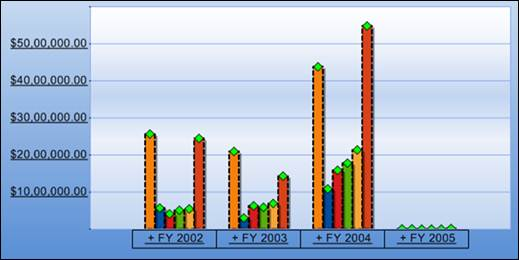

The chart symbol is set at the top of each chart series by assigning a proper value to the Shape property.
|
[C#] foreach (ChartSeries series in this.olapChart1.Series) series.Style.Symbol.Shape = ChartSymbolShape.Diamond; |
|
[VB] For Each series As ChartSeries In Me.olapChart1.Series series.Style.Symbol.Shape = ChartSymbolShape.Diamond Next series |

Figure 14: Symbol over chart series